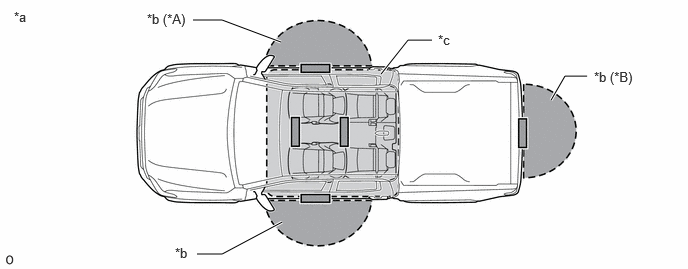

- Front door outside handle assembly LH
- Front door outside handle assembly RH (w/ Front Passenger Door Entry Function)
- Electrical key antenna (outside luggage compartment) (w/ Power Tail Gate System)
| Last Modified: 12-09-2025 | 6.11:8.1.0 | Doc ID: RM100000002GAPY |
| Model Year Start: 2024 | Model: Tacoma | Prod Date Range: [12/2023 - 03/2024] |
| Title: THEFT DETERRENT / KEYLESS ENTRY: SMART KEY SYSTEM (for Entry Function): PRECAUTION; 2024 MY Tacoma Tacoma HV [12/2023 - 03/2024] | ||
PRECAUTION
PRECAUTION FOR DISCONNECTING CABLE FROM NEGATIVE (-) AUXILIARY BATTERY TERMINAL
NOTICE:
-
After the ignition switch is turned off, there may be a waiting time before disconnecting the negative (-) auxiliary battery terminal.
Click here
![2024 - 2026 MY Tacoma Tacoma HV [12/2023 - ]; SETUP: WHEN DISCONNECTING OR RECONNECTING BATTERY TERMINAL: BEFORE DISCONNECTING BATTERY](../../../../stylegraphics/info.gif)
-
When disconnecting and reconnecting the auxiliary battery.
HINT:
When disconnecting and reconnecting the auxiliary battery, there is an automatic learning function that completes learning when the respective system is used.
Click here
CAUTION REGARDING INTERFERENCE WITH ELECTRONIC DEVICES
CAUTION:
As weak radio waves are emitted from the electrical key transmitter sub-assembly, if a pacemaker is being used, be sure to read the pacemaker instruction manual and the following.
-
People with implantable cardiac pacemakers, cardiac resynchronization therapy-pacemakers or implantable cardioverter defibrillators should keep away from the smart key system antennas. The radio waves may affect the operation of such devices. If necessary, the entry function can be disabled. Ask your dealer for details, such as the frequency of radio waves and timing of the emitted radio waves. Then, consult your doctor to see if you should disable the entry function.
Click here
- User of any electrical medical device other than implantable cardiac pacemakers, cardiac resynchronization therapy-pacemakers or implantable cardioverter defibrillators should consult the manufacturer of the device for information about its operation under the influence of radio waves. Radio waves could have unexpected effects on the operation of such medical devices.
- Ask your dealer for details for disabling the smart key system.
|
Exterior antenna |
|
|
Interior antenna |
|
HINT:
Smart key system can be disabled by customize function.
Click here
SMART KEY SYSTEM SPECIFICATIONS
(a) Some customers may inquire about the frequency used by the smart key system on various models. This repair manual contains the applicable specifications of the smart key system.
|
*A |
w/ Front Passenger Door Entry Function |
*B |
w/ Power Tail Gate System |
|
*a |
Transmitter Detection Area |
*b |
Outside Detection Area |
|
*c |
Inside Detection Area |
- |
- |
Specifications for Smart Key System Antenna LF Output Power
|
Specification |
||||
|---|---|---|---|---|
|
Frequency |
Output Power/Electric Field Intensity |
Modulation Method |
Mounting Point in Vehicle |
|
|
Inside Passenger Compartment (Indoor Electrical Key Antennas) |
134.2 kHz |
93.5 dBuV/m at 3 m |
AM |
Inside vehicle |
|
Outside Vehicle |
134.2 kHz |
94.6 dBuV/m at 3 m |
AM |
|
Specifications for Smart Key System Antenna LF Transmission Timing
|
Transmission Timing |
|||
|---|---|---|---|
|
Vehicle Remains Parked |
Entering or Exiting the Vehicle |
Vehicle is being Driven |
|
|
*1: w/ Remote Control Function
*2: When any door or tail gate the is opened or closed, the timer resets. *3: w/ Power Tail Gate System |
|||
|
Inside Passenger Compartment (Indoor Electrical Key Antennas) |
|
|
|
|
Outside Vehicle (Outside Detection Area) |
|
|
Does not transmit |
PRECAUTION WHEN USING GTS
(a) When using the GTS with the ignition switch off, connect the GTS to the DLC3 and turn a courtesy light switch on and off at intervals of 1.5 seconds or less until communication between the GTS and the vehicle begins. Then select the vehicle type under manual mode and enter the following menus: Body Electrical / Smart Key. While using the GTS, periodically turn a courtesy light switch on and off at intervals of 1.5 seconds or less to maintain communication between the GTS and the vehicle.
PRECAUTION FOR ACC CUSTOMIZE
(a) When performing an inspection, make sure that "ACC Customize" is set to "ON" using the multi-display.
Click here
HINT:
When "ACC Customize" is set to "ON" (ACC supply power enabled), the certification ECU (smart key ECU assembly) controls the ACC relay on and off. When "ACC Customize" is set to "OFF" (ACC supply power disabled), the certification ECU (smart key ECU assembly) and radio and display receiver assembly control the ACC relay on and off.
Therefore, inspection conditions and results may differ depending on whether "ACC customize" is set to ON or OFF when inspecting ACC related terminals or the Data List.
PRECAUTION RELATED TO VEHICLE AUXILIARY BATTERY
(a) The entry unlock function may not operate immediately after the cables are reconnected to the auxiliary battery. If this occurs, the entry unlock function can be restored by performing a wireless door lock and unlock or mechanical key operation.
(b) When the doors are locked, electrical waves are sent from the vehicle, which uses power from the auxiliary battery. This means that the auxiliary battery may be depleted if the vehicle is left for a long time. When not using the vehicle for a long time, disconnect the cable from the negative (-) auxiliary battery terminal or cancel the smart key system.
HINT:
Smart key system can be disabled by customize function.
Click here
PRECAUTION WHEN REPLACING PARTS
(a) If replacing any of the following parts, refer to registration.
Click here
(1) Certification ECU (smart key ECU assembly)
(2) Main body ECU (multiplex network body ECU)
(3) Electrical key transmitter sub-assembly
(b) Electrical key and tire pressure monitoring system receiver assembly
If the electrical key and tire pressure monitoring system receiver assembly is replaced, it is necessary to register the electrical key transmitter sub-assemblies to the new electrical key and tire pressure monitoring system receiver assembly and perform registration and initialization.
HINT:
For registration:
Click here
For initialization:
Click here
PRECAUTIONS FOR ELECTRICAL KEY TRANSMITTER SUB-ASSEMBLY
(a) The electrical key transmitter sub-assembly is a precision instrument. Be sure to observe the following:
(1) Do not subject the electrical key transmitter sub-assembly to strong physical shocks.
(2) Do not keep the electrical key transmitter sub-assembly in a high temperature area for a long time.
(3) Do not use an ultrasonic washing machine to clean the electrical key transmitter sub-assembly.
(4) Do not use the electrical key transmitter sub-assembly near any magnets or magnetized items.
(5) Do not place the electrical key transmitter sub-assembly near magnetic equipment, such as digital audio players, induction cookers, medical devices that generate low-frequency electromagnetic waves, etc.
(6) Do not attach any stickers to the electrical key transmitter sub-assembly.
(7) Do not disassemble the electrical key transmitter sub-assemblies.
(8) The mechanical key should only be used in an emergency, such as when the transmitter battery is depleted.
(b) When the doors are locked and an electrical key transmitter sub-assembly is in the detection area of an electrical key antenna, the transmitter battery may be depleted due to periodic communication between the electrical key transmitter sub-assembly and the vehicle. If the vehicle is not to be used for a long time, keep the electrical key transmitter sub-assembly away from the vehicle (more than 3.5 m (11.48 ft.)).
HINT:
To set the transmitter battery saving mode function, refer to the smart key system (for Start Function).
Click here
PRECAUTIONS WHEN INSPECTING SMART KEY SYSTEM (for Entry Function)
(a) General precaution for the smart key system (for Entry Function):
(1) Always carry the electrical key transmitter sub-assembly.
(b) The smart key system (for Entry Function) may not operate normally or the key detection area may decrease in the following situations:
(1) The transmitter battery is depleted.
(2) There are TV towers, electric power plants, broadcasting stations, gas stations or other facilities that generate strong radio waves or electrical noise nearby.
(3) Wireless communication devices, such as walkie-talkies, cell phones, cordless telephones, digital audio players, portable game systems, etc., are carried together with the electrical key transmitter sub-assembly.
(4) The electrical key transmitter sub-assembly is covered by or in contact with objects made of metal, such as coins, certain types of cards, etc.
(5) Metallic film is applied to the rear window glass.
(6) A radio wave type keyless entry system or wireless remote is operated nearby.
(7) An electrical key transmitter sub-assembly from another vehicle is nearby.
(8) The electrical key transmitter sub-assembly is placed near equipment that generates high-voltage or electrical noise.
(9) The electrical key transmitter sub-assembly is placed near an electronic device such as a battery charger.
(10) When parking at coin-operated parking spaces (due to electrical waves used for detecting vehicles).
(c) Operating range of the smart key system (for Entry Function):
(1) Due to the design of the vehicle body, there are some areas in which proper system operation is difficult.
(2) Even if the electrical key transmitter sub-assembly is in the vehicle exterior detection area, the electrical key transmitter sub-assembly may not be properly detected if the electrical key transmitter sub-assembly is near a window, a door handle or the center of the bumper.
(3) Even if an electrical key transmitter sub-assembly is in a vehicle interior detection area, the electrical key transmitter sub-assembly may not be properly detected if it is on the instrument panel, in the glove box or on the floor.
(4) Depending on the way the electrical key transmitter sub-assembly is held, the electrical key transmitter sub-assembly may not operate properly.
(d) The smart key system (for Entry Function) will not operate under the following conditions:
(1) The procedure to cancel the smart key system (for Entry Function) has been performed.
(2) There is no transmitter battery or the transmitter battery is depleted (the LED of the electrical key transmitter sub-assembly does not blink when an electrical key transmitter sub-assembly switch is pressed).
PRECAUTIONS FOR ENTRY UNLOCK FUNCTION
(a) When unlocking the doors, make sure to grasp the door outside handle assembly, ensuring contact with the sensor on the inner part of the handle. Pull the handle after confirming that the door has unlocked.
(b) If the door outside handle assembly is grasped with gloved hands, unlocking may be delayed or may not occur.
(c) When performing an entry unlock operation, make sure to check that the doors are unlocked before pulling a door outside handle assembly to open a door.
(d) When attempting to open a door suddenly or immediately after entering a vehicle exterior detection area, the door may not unlock. In this case the system automatically performs the door unlock operation 4 times. However, if a door outside handle assembly is being pulled at this time, the door may not unlock due to mechanical reasons. If the door is not unlocked, return the door outside handle to its original position and pull the handle after confirming that the door has unlocked.
(e) If the electrical key transmitter sub-assembly is brought too close to the door outside handle assembly, it may not be possible to unlock the door with the entry unlock function.
(f) After a wireless door lock, manual door lock or key-linked door lock operation is performed with the electrical key transmitter sub-assembly in an interior detection area or near the vehicle, an entry unlock operation cannot be performed. Therefore, when a wireless door lock operation is performed near a window or door handle, the entry unlock may not be able to be operated. To unlock the doors, perform a wireless door unlock operation.
(g) If an electrical key transmitter sub-assembly is within a vehicle exterior detection area, the door can be unlocked even when a person other than the person carrying the electrical key transmitter sub-assembly grasps the door outside handle assembly. However, doors other than the door for which the matching code is detected cannot be unlocked (if the electrical key transmitter sub-assembly is in the vehicle exterior detection area of the driver side door and the front door outside handle assembly LH is held, the doors can be unlocked. However, if the front door outside handle assembly RH is held, the doors cannot be unlocked).
(h) If a door is not opened after a door unlock operation, the doors automatically lock after approximately 60 seconds*.
(i) If an electrical key transmitter sub-assembly is within a vehicle exterior detection area and a large amount of water is applied to a door outside handle assembly, such as by a car wash or heavy rain, the sensor may react and the entry unlock operation may be performed. However, the doors will automatically lock after approximately 60 seconds if a door is not opened*.
(j) If the electrical key transmitter sub-assembly is being carried together with an electrical key transmitter sub-assembly from another vehicle with a smart key system and the door outside handle assembly is held, the time before the door is unlocked by the entry unlock operation may be more than normal.
HINT:
*: When the auto lock function operates after an entry unlock operation, if an electrical key transmitter sub-assembly is detected in the cabin, the doors will be unlocked by the door ajar warning function.
PRECAUTIONS FOR ENTRY LOCK FUNCTION
(a) When performing an entry lock operation, if the lock sensor on the door outside handle assembly is touched too quickly, the door may not lock.
(b) If the electrical key transmitter sub-assembly is brought near the vehicle interior (window, door outside handle assembly), the entry lock function may not operate. Also, the key reminder warning buzzer may sound and the entry unlock function may stop operating. In this case, move the electrical key transmitter sub-assembly away from the vehicle interior (window, door outside handle assembly), perform an entry lock operation, and then perform an entry unlock operation.
(c) If the electrical key transmitter sub-assembly is left on the instrument panel, in the glove box or on the floor, the key reminder warning function may not operate and the electrical key transmitter sub-assembly may be locked in the vehicle when a door lock operation is performed. Always carry the electrical key transmitter sub-assembly.
(d) The entry unlock operation cannot be performed for approximately 3 seconds after an operation that locks the doors, such as an entry lock or wireless door lock operation, is performed.
(e) When checking the operation of the entry lock function several times, it can only be operated up to 2 times consecutively depending on the setting. To perform the operation 3 times or more consecutively, the doors need to be unlocked once (any unlock operation is acceptable). However, this is only for the entry lock function, other door lock functions, such as the wireless door lock function, can be operated consecutively.
|
|
|